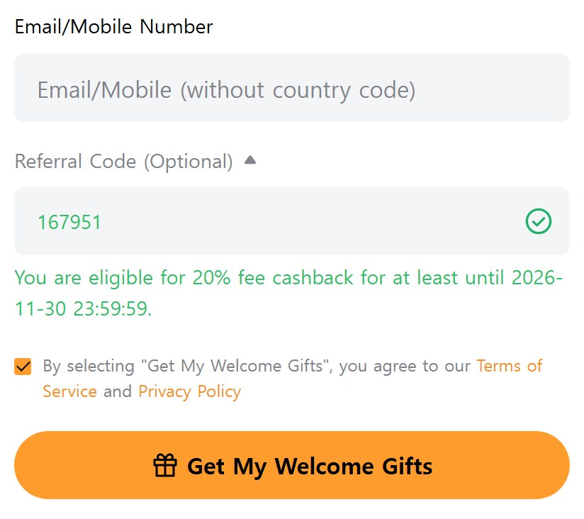
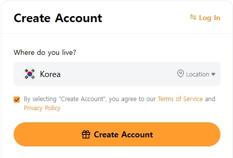
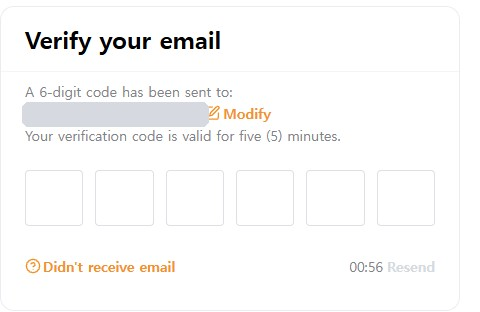
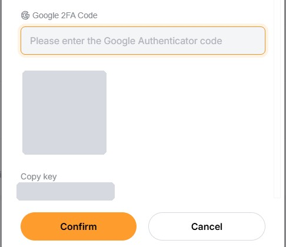
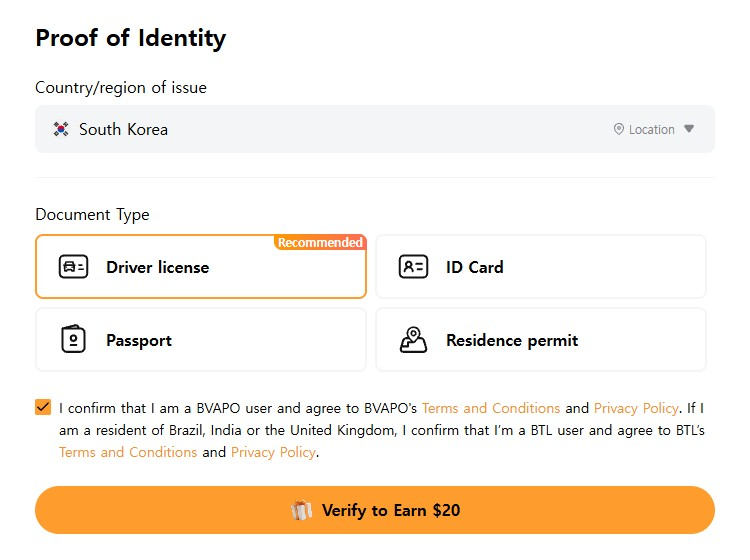
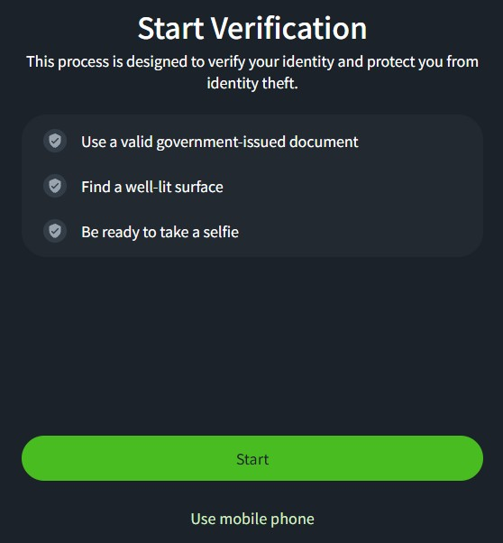
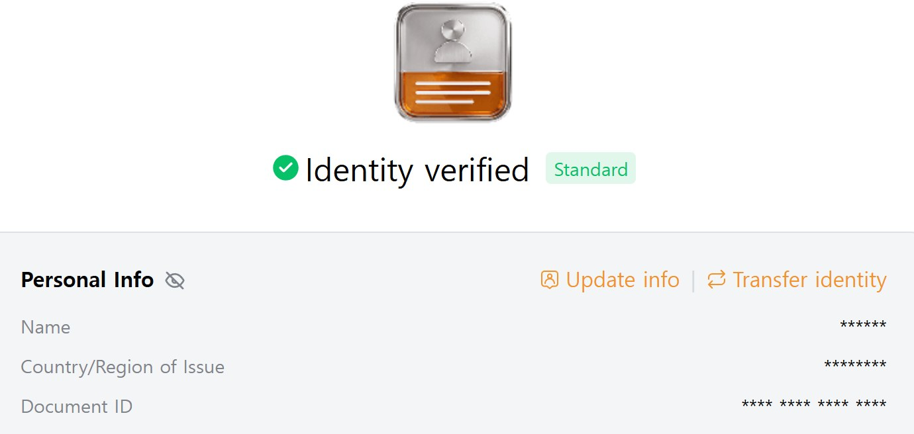
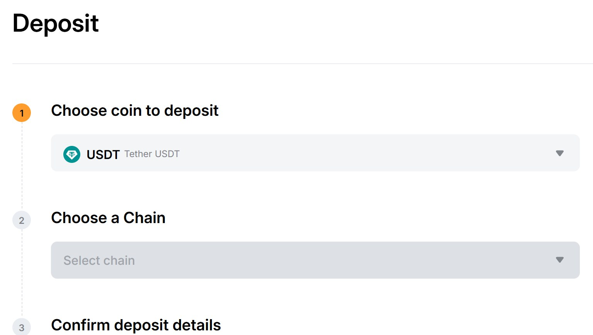
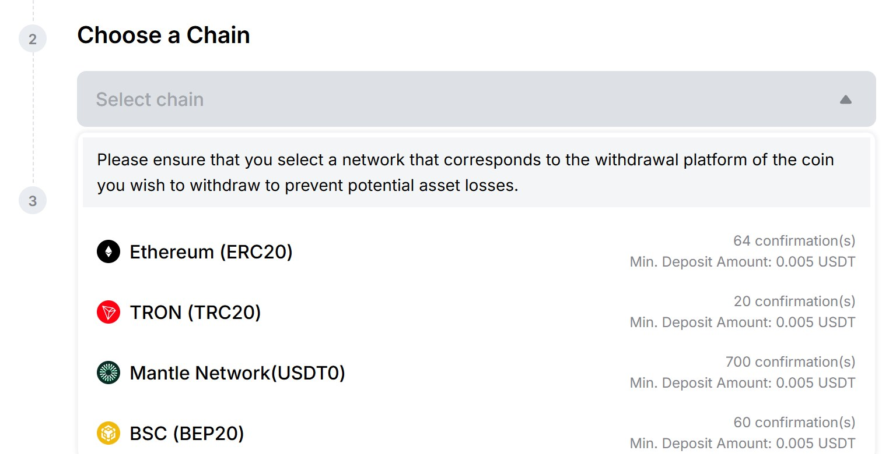
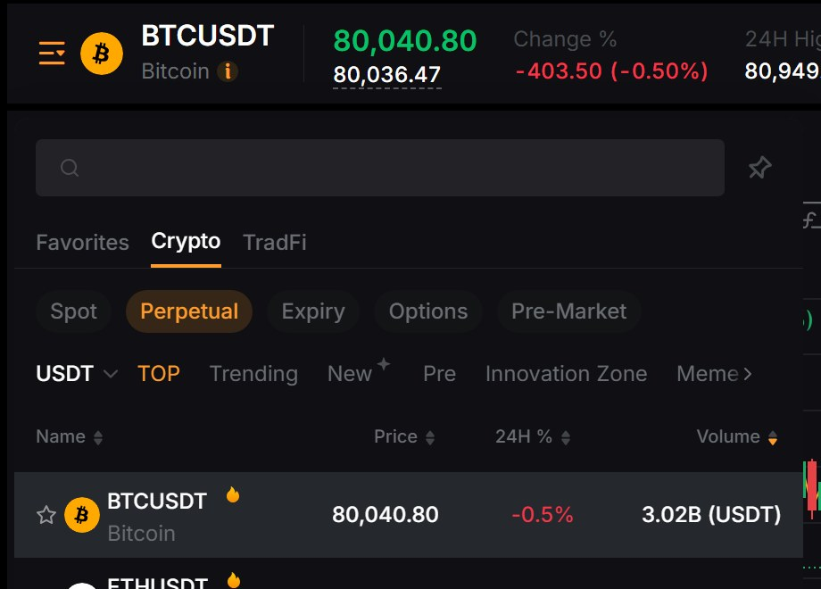

注册 1Bybit01
填写邮箱
确认邀请码

- 1填写邮箱。
验证码会发到这个邮箱。 - 2邀请码 167951 旁边出现绿色对勾，说明优惠已生效。
注册后就不能再填邀请码了。 - 3条款已经勾选好了。
点 Get My Welcome Gifts。
用 App 注册请手动输入邀请码
注册 2Bybit02
选择
居住国家

- 1在 Where do you live? 选择你所在的国家。
通常已经自动选好。 - 2确认已勾选条款，点 Create Account。
出现拼图时，把滑块拖到缺口处。
页面可能略有不同
Bybit 会不定期改版。本指南里的按钮名称以页面实际显示的英文为准，照着找就行。
注册 3Bybit03
输入
邮箱验证码

- 1邮箱会收到 6 位验证码。
要在 5 分钟内输入。 - 2填满六个格子会自动进入下一步。
- 3没收到邮件先看垃圾箱。
倒计时结束后可点 Resend 重发。
注册 4Bybit04
设置
登录密码

- 1在 Password 栏设置登录密码。
- 28~30 位，至少含一个大写字母、小写字母和数字。
四条都打勾就通过了。 - 3点 Create Account 就注册完成。
不要用和其他网站相同的密码
交易所账户里是真金白银，
最好设一个只在这里用的密码。
安全 1Bybit05
打开
安全页面

- 1右上角人像图标 › Account › 左侧 Security。
注册邮箱已经是开启状态。 - 2点 Google Two Factor Authentication 那一行的 Settings。
绑定完成后会像图中一样出现绿点。
充值前先完成
提币时需要邮箱验证码和验证器验证码两样。
以后更换验证器会锁定提币 24 小时。
安全 2Bybit06
用邮箱验证码
确认本人

- 1点 Settings 会弹出 Security Verification 窗口，
验证码发到注册邮箱。 - 2输入邮件里的 6 位验证码。
- 3没收到的话，等右侧倒计时结束后可重新获取。
先在手机上装好验证器 App
在 App Store 或 Google Play 下载 Google Authenticator（免费）。
Microsoft Authenticator 也可以。
安全 3Bybit07
扫描二维码
输入验证码

- 1在验证器 App 里点 + › Scan a QR code 扫描二维码。
图中的灰色方块就是二维码的位置。 - 2扫不了就把 Copy key 的密钥手动填进 App。
这个密钥请抄在纸上保存。 - 3把 App 上的 6 位数填进 Google 2FA Code，点 Confirm。
每 30 秒会变一次，要尽快填。
不要截图这个二维码和密钥
别人拿到它就能生成你的验证码。
换手机时用抄下的密钥恢复。
身份认证 1Bybit08
开始
身份认证

- 1人像图标 › Account › Identity Verification 的 Verify Now。
签发国家选证件的发行国。 - 2在 Document Type 选证件类型。
驾照 · 身份证（ID Card）· 护照 · 居留证。 - 3点下方橙色按钮进入拍照步骤。
完成认证才能充值和交易合约
新注册账户完成第一级（Standard）认证前，
无法充值加密货币，也不能交易永续合约。
身份认证 2Bybit09
拍摄
证件和人脸

- 1准备好证件原件、明亮的环境和自拍。
不接受照片文件或扫描件。 - 2点 Start 用电脑摄像头拍摄。
- 3电脑没有摄像头就选 Use mobile phone。
用手机扫二维码接着完成。
证件要求
证件要清晰可读、未过期，
且本人年满 18 岁。
身份认证 3Bybit10
确认
认证完成

- 1审核完成后会显示 Identity verified · Standard。
一般 15 分钟，最长 48 小时。 - 2Personal Info 里的姓名要和转出账户的姓名一致。
大额转账时交易所会核对姓名（旅行规则）。
审核期间无需做任何事
完成后会收到邮件和通知。
趁这段时间先把安全设置做好。
充值 111
用加密货币充值
而不是银行转账
本指南用加密货币入金：先买 USDT，再转到 Bybit。
其他交易所或银行卡在你常用的交易所买 USDT，或用 Bybit 的 Buy Crypto 刷卡购买
▼
以加密货币转账把 USDT 提到你的 Bybit 充值地址（TRON 网络）
▼
到账 Bybit进入 Unified Trading 账户即可交易
刚买完币往往暂时不能提
很多交易所在法币入金或刷卡买币后会暂时限制提币，请提前准备。
充值 3Bybit13
打开
充值页面

- 1点右上角 Deposit 按钮就会打开这个页面。
走 Assets › Deposit 也一样。 - 2在 Choose coin to deposit 选
USDT。
在搜索框输入 USDT 马上就能找到。 - 3接着会出现 Choose a Chain。
充值 4Bybit14
选择
Tron 网络

- 1点 Select chain 展开网络列表。
- 2点 TRON (TRC20)。
- 3右侧是到账条件：20 次确认后到账，
少于 0.005 USDT 不会入账。
转出方也要选 TRON
转出和转入的网络不一致，
币就会丢失且无法找回。
充值 5Bybit15
复制地址
选择到账账户

- 1用地址右边的复制按钮复制，
粘贴到转出方的提币页面。 - 2Route Deposits To 是币到账的账户。
默认是 Funding。 - 3改成 Unified Trading，
到账后不用划转就能交易。
不要手动抄写地址
一定用复制按钮。错一个字符，钱就没了。
充值 8Bybit18
划转到
交易账户

如果前面已把到账账户设为 Unified Trading，可以跳过这一步。
- 1Assets › Transfer。
方向是Funding→Unified Trading就对了。 - 2Coin 选
USDT。 - 3Amount 填金额，All 为全部。点 Confirm，
即时划转、没有手续费。
合约 1Bybit19
打开
合约页面

- 1鼠标移到顶部菜单的 Trade 上。
- 2鼠标移到 Futures，右侧会出现合约品种。
确认上方选中的是 USDT 标签。 - 3点 BTCUSDT 打开比特币合约页面。
网址以 bybit.com/trade/usdt 开头就对了。
别和 Spot 搞混
Spot 是直接买卖现货的页面。
本指南以 Futures 页面为准。
合约 2Bybit20
选择
合约品种

- 1点左上角 ☰ BTCUSDT，
打开品种列表。 - 2在搜索框输入币种，
用 BTC、ETH、SOL 这样的英文代号。 - 3点列表里的一行，页面就切换过去。
Perpetual 指没有到期日的永续合约。
新手先从 BTC、ETH 这类大品种开始
成交量大，容易成交，价格也不容易乱跳。
合约 3Bybit21
设置保证金模式
和杠杆

- 1点 Cross 展开列表，
选择 Isolated（逐仓）。 - 2点 10.00x 打开倍数列表。
直接选，或用 Customize 自定义。
逐仓（Isolated）和全仓（Cross）的区别
逐仓最多亏掉这笔仓位的保证金；全仓以账户全部资金作担保，大行情可能全部亏光。默认是 Cross · 10 倍。
合约 4Bybit22
订单类型、
价格和数量

- 1Limit 按你定的价格挂单，Market 按当前价立即成交。
第三个标签是进阶订单，新手可以先不用。 - 2Price 是限价单的价格。
点 Last 自动填入当前价。 - 3Quantity 是数量。拖动下方 0~100% 滑条，
可以按资金比例设置。
新手用 Market 最省事
立刻成交，也不用填价格。
代价是成交价可能稍差一点。
合约 5Bybit23
开多开空
设好止盈止损

- 1勾选 TP/SL，下面会出现两个输入框。
- 2Take Profit 是止盈价，Stop Loss 是止损价。
- 3看涨点 Long，看跌点 Short。
成交后会显示在下方 Positions 标签里。
一定要设止损
带杠杆时，行情反向会瞬间被强平。
每次下单都顺手填上 SL 价格，才能保住本金。